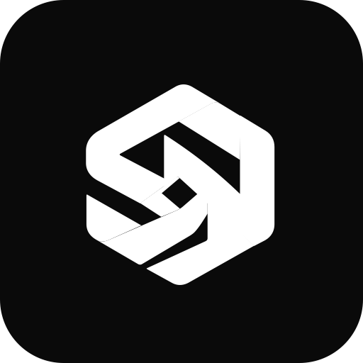

A transparent, fully auditable community token built on Solana: a standard SPL token with a fixed supply of 100 trillion, administration rights revoked irreversibly — no custom program, no hidden fees, no freeze or blacklist logic. This document explains every design decision in plain language, shows the audited Devnet prototype, and maps the roadmap to mainnet. Ein transparenter, vollständig nachvollziehbarer Community-Token auf Solana: ein Standard-SPL-Token mit fixer Gesamtmenge von 100 Billion, unwiderruflich entzogenen Verwaltungsrechten — kein eigenes Programm, keine versteckten Gebühren, keine Freeze- oder Blacklist-Logik. Dieses Dokument erklärt jede Design-Entscheidung in verständlicher Sprache, zeigt den geprüften Devnet-Prototypen und skizziert den Weg zum Mainnet.
SuperIntelNex is a community token project in development. There is no mainnet launch, no sale and no live token with real value — the token that currently exists is a Devnet test token on Solana's test network, with zero economic value. This document is not investment, tax or legal advice and makes no promises about prices, yields or gains. All parameters are confirmed for the Devnet test token only; they apply to a mainnet launch solely after re-confirmation (see the Roadmap). SuperIntelNex ist ein Community-Token-Projekt im Aufbau. Es gibt keinen Mainnet-Start, keinen Verkauf und keinen Live-Token mit echtem Wert — der aktuell existierende Token ist ein reiner Devnet-Testtoken auf dem Solana-Testnetz ohne wirtschaftlichen Wert. Dieses Dokument ist keine Anlage-, Steuer- oder Rechtsberatung und stellt keine Kurse, Erträge oder Gewinne in Aussicht. Alle Parameter sind nur für den Devnet-Testtoken bestätigt und gelten für einen Mainnet-Launch erst nach erneuter Bestätigung (siehe Roadmap).
SuperIntelNex (SIN) is a community token project with a long-term vision for AI, superintelligence and digital payments. It is developed in the open: every token parameter, script, test and transaction record is published in the public project repository, and every on-chain step of the Devnet run can be verified by anyone in the Solana Explorer. SuperIntelNex (SIN) ist ein Community-Token-Projekt mit einer langfristigen Vision für KI, Superintelligenz und digitale Zahlungen. Es wird offen entwickelt: Jeder Token-Parameter, jedes Skript, jeder Test und jedes Transaktionsprotokoll liegt öffentlich im Projektrepository, und jeder On-Chain-Schritt des Devnet-Laufs kann von jedem im Solana-Explorer geprüft werden.
SuperIntelNex is a community-owned standard SPL token on Solana with a fixed supply of 100 trillion, whose creation rights were permanently and verifiably handed over — currently as a fully documented Devnet prototype, with mainnet launch as a defined roadmap. SuperIntelNex ist ein community-geprägter Standard-SPL-Token auf Solana mit fester Gesamtmenge von 100 Billion, dessen Erstellungsrechte dauerhaft und nachweisbar abgeben wurden — aktuell als vollständig dokumentierter Devnet-Prototyp, mit dem Mainnet-Launch als definierte Roadmap.
No custom program: the two most-used Solana token programs (SPL Token + Metaplex Metadata), fully audited and battle-tested.Kein eigenes Programm: die zwei am weitesten eingesetzten Solana-Programme (SPL Token + Metaplex Metadata), vollständig geprüft und erprobt.
100,000,000,000,000 SIN, 5 decimals, no further issuance — enforced on-chain by the revoked mint authority.100.000.000.000.000 SIN, 5 Dezimalstellen, keine weiteren Emissionen — On-Chain durch die entzogene Mint-Vollmacht erzwungen.
81 % of the planned mainnet allocation goes to the community — the largest share of any category.81 % der geplanten Mainnet-Verteilung gehen an die Community — der größte Anteil aller Kategorien.
The name already says what the project points at: SuperIntel — a long-term bet on artificial intelligence and superintelligence — combined with Nex, the next generation of digital exchange. The token is the community's anchor in this journey: a shared, permanently fixed asset that follows the project from today's prototype to future use cases. Der Name sagt bereits, worauf das Projekt zielt: SuperIntel — eine langfristige Wette auf künstliche Intelligenz und Superintelligenz — verbunden mit Nex, der nächsten Generation des digitalen Austauschs. Der Token ist der Anker der Community auf dieser Reise: ein gemeinsames, dauerhaft fixiertes Asset, das das Projekt vom heutigen Prototypen zu zukünftigen Anwendungsfällen begleitet.
SuperIntelNex pursues three building blocks. Important: all of them are planned goals — not delivered features, not commitments: SuperIntelNex verfolgt drei Bausteine. Wichtig: Alle Punkte sind geplante Ziele — keine umgesetzten Funktionen, keine Zusagen:
| Building blockBaustein | Goal (planned)Ziel (geplant) | Status todayStatus heute |
|---|---|---|
| TransfersÜbertragungen | Wallet-to-wallet transfers of the tokenWallet- zu Wallet-Transfers des Tokens | Technically validated in the Devnet run (checked-transfer test passed)Technisch im Devnet-Lauf validiert (Checked-Transfer-Test bestanden) |
| TradingHandel | Tradability on supported platforms at a later stageSpäter Handelbarkeit auf unterstützten Plattformen | Planned — no listings promised; exchange listings require separate provider processesGeplant — keine Listings zugesagt; Börsenaufnahmen erfordern separate Anbieter-Prozesse |
| Payments & AIBezahlen & KI | Payments with participating providers; merchant adoption and AI applications as long-term goalsZahlungen bei teilnehmenden Anbietern; Händlerakzeptanz und KI-Anwendungen als langfristige Ziele | Long-term vision, not implementedLangfristige Vision, nicht umgesetzt |
For this project the token is an alignment instrument: it gives the community a shared, permanent interest in the project's success. A fixed supply and revoked authorities mean that interest can't be diluted later by whoever controls the project — that's the technical core of this whitepaper. Für dieses Projekt ist der Token ein Alignment-Instrument: Er gibt der Community ein gemeinsames, dauerhaftes Interesse am Erfolg des Projekts. Fixe Supply und entzogene Vollmachten bedeuten, dass dieses Interesse nicht später von jemandem, der das Projekt kontrolliert, verwässert werden kann — das ist der technische Kern dieses Whitepapers.
Partnerships, audits and team details are unconfirmed as of this version. This whitepaper sticks strictly to documented, verifiable project facts. Partnerschaften, Audits und Teamangaben sind in dieser Version nicht bestätigt. Dieses Whitepaper hält sich strikt an belegbare, nachvollziehbare Projektfakten.
The architectural rule of this project is deliberately simple: use the most battle-tested, widely audited building blocks that exist — and build nothing new. Every complexity you don't see in a token is a risk that doesn't exist in this project. Die Architekturregel dieses Projekts ist bewusst einfach: Die am besten erprobten, am weitesten geprüften Bausteine verwenden — und nichts Neues bauen. Jede Komplexität, die man in einem Token nicht sieht, ist ein Risiko, das in diesem Projekt nicht existiert.
TokenkegQfeZyiNwAJbNbGKPFXCWuBvf9Ss623VQ5DA
The standard program of Solana: it manages token accounts, transfers and minting. In use since 2021, on the critical path of virtually every token on Solana.
Das Standard-Programm von Solana: Es verwaltet Token-Konten, Transfers und Emissionen. Im Einsatz seit 2021, liegt auf dem Kritischen Pfad nahezu jedes Tokens auf Solana.
metaqbxxUerdq28cj1RbAWkYQm3ybzjb6a8bt518x1s
Stores the token's name, symbol and description permanently on-chain (isMutable: false). Without it, wallets would just show a raw address.
Speichert den Namen, das Symbol und die Beschreibung des Tokens dauerhaft On-Chain (isMutable: false). Ohne es würden Wallets nur eine rohe Adresse anzeigen.
sellerFeeBasisPoints = 0. The only lock mechanism in standard SPL is the freeze authority — and that one was revoked after the mint (see 4.3).Keine Blacklist, keine versteckten Gebühren. Verkaufen ist immer möglich: sellerFeeBasisPoints = 0. Der einzige Sperrmechanismus im Standard-SPL ist die Freeze-Vollmacht — und die wurde nach der Emission entzogen (siehe 4.3).
The whole token lifecycle is implemented as a public, tested script pipeline in the repository's token/ folder (runtime: Deno, an open-source TypeScript environment). Each step does exactly one thing and logs its signature — so every run can be replayed and verified.
Der gesamte Token-Lebenszyklus ist als öffentliche, getestete Skript-Pipeline im Ordner token/ des Repositories umgesetzt (Laufzeit: Deno, eine Open-Source-TypeScript-Umgebung). Jeder Schritt tut genau eine Sache und protokolliert seine Signatur — so kann jeder Lauf nachgespielt und geprüft werden.
create-mint.ts
Mint + token account + metadata in a single transactionMint + Token-Konto + Metadaten in einer Transaktion
mint-initial.ts
Issue the full supply of 100 trillion SINGesamtmenge von 100 Billion SIN emittieren
transfer-test.ts
Checked transfer of 1,234 SIN — proves that transfers workChecked-Transfer von 1.234 SIN — beweist, dass Transfers funktionieren
verify.ts
On-chain check: decimals, supply, authorities, metadataOn-Chain-Abgleich: Decimals, Supply, Vollmachten, Metadaten
revoke-authorities.ts
One-way: mint & freeze authorities are gone foreverEinweg: Mint- & Freeze-Vollmacht endgültig weg
token/scripts/ plus offline config tests with a u64-supply guard and integration tests against a local test validator. Devnet run on 09 Nov 2026: 6/6 tests passed, all steps executed as real transactions.
Die fünf Skripte in token/scripts/ plus offline-Konfig-Tests mit u64-Supply-Guard und Integrationstests gegen einen lokalen Test-Validator. Devnet-Lauf am 09.11.2026: 6/6 Tests bestanden, alle Schritte als echte Transaktionen ausgeführt.
The order of the steps is intentional: verification (verify.ts) runs before the irreversible revocation. As long as step 5 has not happened, mistakes (e.g. a typo in the configuration) can still be fixed by repeating the earlier steps. After step 5, the state is final, public and provable — on purpose.
Die Reihenfolge der Schritte ist Absicht: Die Verifikation (verify.ts) läuft vor der unwiderruflichen Entziehung. Solange Schritt 5 nicht passiert ist, lassen sich Fehler (z. B. Tippfehler in der Konfiguration) durch Wiederholung der vorherigen Schritte korrigieren. Nach Schritt 5 ist der Zustand endgültig, öffentlich und beweisbar — bewusst so.

100 trillion (10¹⁴, German counting) · 5 decimals · no further issuance (FIXED-NO-FURTHER-ISSUANCE)
100 Billion (10¹⁴, deutsche Zählung) · 5 Dezimalstellen · keine weiteren Emissionen (FIXED-NO-FURTHER-ISSUANCE)
| ParameterParameter | ValueWert | NoteAnmerkung |
|---|---|---|
| NameBezeichnung | SuperIntelNex | On-chain fixed (isMutable: false)On-Chain fixiert (isMutable: false) |
| TickerKürzel | SIN | Derived from the name (SupIntelNex); short and readable in wallets and the explorerAus dem Namen abgeleitet (SupIntelNex); kurz und gut lesbar in Wallets und im Explorer |
| DecimalsNachkommastellen | 5 | Technically required at this supply (see box below)Technisch bedingt bei dieser Menge (siehe Kasten unten) |
| MetadataMetadaten | isMutable: false · sellerFeeBasisPoints: 0 | Name/symbol/URI permanently fixed; no royalties, no hidden feesName/Symbol/URI dauerhaft fixiert; keine Royalties, keine versteckten Gebühren |
Blockchains don't store numbers with commas — everything is stored as an integer ("smallest units"). A token with 9 decimals multiplies every amount by 1,000,000,000. With a supply of 100 trillion that would be 10²³ smallest units. But Solana's SPL programs cap the supply at u64 (≈ 1.84 × 10¹⁹) — the maximum number a 64-bit counter can hold. 10¹⁴ × 10⁹ would overflow that counter. 10¹⁴ × 10⁵ = 10¹⁹ still fits: so 5 decimals is the technical maximum, and 1 SIN = 100,000 smallest units. The config test checks this automatically (the "u64 supply guard"). Blockchainen speichern Zahlen nicht mit Kommas — alles wird als Ganzzahl („kleinste Einheiten") gespeichert. Ein Token mit 9 Nachkommestellen multipliziert jeden Betrag mit 1.000.000.000. Bei 100 Billionen Gesamtmenge wären das 10²³ kleinste Einheiten. Aber die SPL-Programme von Solana begrenzen die Supply auf u64 (≈ 1,84 × 10¹⁹) — die größte Zahl, die ein 64-Bit-Zähler halten kann. 10¹⁴ × 10⁹ würde diesen Zähler überlaufen. 10¹⁴ × 10⁵ = 10¹⁹ passt noch: 5 Nachkommastellen sind also das technische Maximum, und 1 SIN = 100.000 kleinste Einheiten. Der Konfig-Test prüft das automatisch (der „u64-Supply-Guard").
The total supply is created exactly once. Allocation defines which wallets receive which share at that moment: 81 % community (the project's core), 10 % seeded into a liquidity pool so the token can be traded from day one, 5 % for the founder(s), and 4 % reserved for the marketing team. Because the supply is fixed, these percentages are also a permanent guarantee: there is no back door where "the team" can mint more for itself later. Die Gesamtmenge wird genau einmal erzeugt. Die Verteilung legt fest, welche Wallets welchen Anteil zu diesem Zeitpunkt erhalten: 81 % Community (Kern des Projekts), 10 % in einen Liquiditätspool, damit der Token ab Tag eins handelbar ist, 5 % für die Gründer und 4 % für das Marketing-Team. Weil die Supply fix ist, sind diese Prozentzahlen zugleich eine dauerhafte Garantie: Es gibt keine Hintertür, mit der sich „das Team" später selbst mehr Token erschaffen könnte.
Every SPL mint carries two optional keys: the mint authority (whoever holds it can create new tokens) and the freeze authority (whoever holds it can lock any holder's account). Both are powerful — and both were irrevocably revoked after the emission (confirmed 09.11.2026). The state is publicly visible as mintAuthority = (none) / freezeAuthority = (none) in the Solana Explorer:
Jeder SPL-Mint trägt zwei optionale Schlüsselpaare: die Mint-Vollmacht (wer sie hält, kann neue Token erzeugen) und die Freeze-Vollmacht (wer sie hält, kann jedes Halterkonto sperren). Beide sind mächtig — und beide wurden unwiderruflich nach der Emission entzogen (bestätigt 09.11.2026). Der Zustand ist im Solana-Explorer öffentlich sichtbar als mintAuthority = (none) / freezeAuthority = (none):
What it means: the total supply is permanently fixed at 100 trillion. No one can create tokens "from nothing" — not the project, not anyone else. A compromised key can no longer inflate the supply. Was es bedeutet: Die Gesamtmenge ist dauerhaft bei 100 Billion fixiert. Niemand kann Token „aus dem Nichts" erzeugen — weder das Projekt noch jemand anderes. Ein kompromittierter Schlüssel kann die Supply nicht mehr aufblähen.
What it means: no token account can ever be locked again. Holders can transfer and sell at any time. There is no unilateral power instrument over any foreign wallet — standard SPL has no blacklist anyway; freeze was its only lock option. Was es bedeutet: Kein Token-Konto kann jemals wieder gesperrt werden. Halter können jederzeit übertragen und verkaufen. Es gibt kein einseitiges Machtinstrument über fremde Wallets — Standard-SPL kennt ohnehin keine Blacklist; Freeze war die einzige Sperrmöglichkeit.
Irreversibility is a double-edged sword. After the revocation, no correction is possible: no late minting to fix a mistake, no thawing of an accidentally frozen account. That is exactly why the pipeline verifies everything (verify.ts) before step 5, and why the revocation is the last step — it is one-way on-chain, by design.
Irreversibilität hat zwei Seiten. Nach dem Entzug ist keine Korrektur mehr möglich: kein nachträgliches Minten eines Fehlers, kein Auftauen eines versehentlich eingefrorenen Kontos. Genau deshalb verifiziert die Pipeline alles (verify.ts) vor Schritt 5, und warum der Entzug der letzte Schritt ist — er ist On-Chain einweg, so by Design.
Proof over promises: on 09 Nov 2026 the full pipeline was executed on Solana Devnet. Devnet is a pure test network without economic value — no real money is involved, and every entry is labelled DEVNET-TESTTOKEN. But the pipeline, the parameters and the process are exactly what will run on mainnet.
Beweis statt Versprechen: Am 09.11.2026 wurde die komplette Pipeline auf Solana Devnet ausgeführt. Devnet ist ein reines Testnetz ohne wirtschaftlichen Wert — es fließt kein echtes Geld, und alle Einträge sind als DEVNET-TESTTOKEN gekennzeichnet. Aber Pipeline, Parameter und Ablauf sind genau das, was später auf Mainnet läuft.
| FieldFeld | ValueWert |
|---|---|
| Mint address (Devnet)Mint-Adresse (Devnet) | CyEcfZw2FogCrehQqkWxksKtsndNwrtKHQqDfPdHCLLf |
| Name / SymbolName / Symbol | SuperIntelNex / SIN · 5 decimals5 Dezimalstellen |
| SupplySupply | 100,000,000,000,000 SIN (10¹⁹ smallest units10¹⁹ kleinste Einheiten) |
| Test transfersTest-Transfers | 1,234 SIN (pipeline test) + 1,000,000 SIN to a one-way recipient test wallet1.234 SIN (Pipeline-Test) + 1.000.000 SIN an eine einweg-Empfänger-Test-Wallet |
| AuthoritiesVollmachten | Mint & freeze irreversibly revoked (visible in explorer as “(none)”) — mint revocation txMint-Entzug-Tx / freeze revocation txFreeze-Entzug-TxMint & Freeze unwiderruflich entzogen (im Explorer als „(none)“ sichtbar) — Mint-Entzug-TxMint-Entzug-Tx / Freeze-Entzug-TxFreeze-Entzug-Tx |
| CostKosten | ~0.5 test-SOL (public faucet) — no real costs~0,5 Test-SOL (öffentlicher Faucet) — keine echten Kosten |
Blockchains like Solana run a "production network" (mainnet) with real value, plus test networks where the same software runs with worthless coins. Devnet is one of those: it has the identical program code, identical rules, and even its own block explorer — but everything on it has no money value. That makes Devnet the perfect proving ground: the project can run the complete, identical emission pipeline, verify every step, and document it publicly — without a single cent of real risk. Blockchainen wie Solana betreiben ein „Produktionsnetz“ (Mainnet) mit echtem Wert plus Testnetze, auf denen dieselbe Software mit wertlosen Coins läuft. Devnet ist so ein Netz: identischer Programmcode, identische Regeln, sogar ein eigener Block-Explorer — aber alles ohne Geldwert. Das macht Devnet zum idealen Prüfgelände: Das Projekt kann die komplett identische Emissions-Pipeline laufen lassen, jeden Schritt verifizieren und öffentlich dokumentieren — ohne einen einzigen Cent echtes Risiko.
View the mint account on the Solana Explorer (Devnet)
Mint-Konto im Solana-Explorer (Devnet) ansehen
Anyone can verify supply, decimals and authorities here.Hier kann jeder Supply, Nachkommestellen und Vollmachten prüfen.
All steps of the run — airdrop, mint, initial emission, transfer tests and both SetAuthority transactions — are documented with their full signatures and explorer links in token/docs/DEVNET-TESTTOKEN-BERICHT.md.
Alle Schritte des Laufs — Airdrop, Mint, Initialemission, Transfer-Tests und beide SetAuthority-Transaktionen — sind mit vollen Signaturen und Explorer-Links in token/docs/DEVNET-TESTTOKEN-BERICHT.md dokumentiert.
Signing happened exclusively with local one-way test wallets — the operator's seed phrase or private keys were never requested or used. After the run, the admin test wallet was archived and locked locally. Minting and freezing are on-chain impossible anyway, because the authorities are revoked. Signiert wurde ausschließlich mit lokalen einweg-Test-Wallets — Seed-Phrase oder private Schlüssel des Betreibers wurden nie abgefragt oder verwendet. Nach dem Lauf wurde die Admin-Test-Wallet lokal archiviert und gesperrt. Minten und Freezen ist On-Chain ohnehin unmöglich, da die Vollmachten entzogen sind.
The mainnet launch follows in three phases. None of it has happened yet — this section is a plan, not a status. Der Mainnet-Launch folgt in drei Phasen. Nichts davon ist heute bereits erfolgt — dieser Abschnitt ist ein Plan, kein Status.
The governance step: everything that will be permanently fixed on mainnet is decided here, openly.Der Governance-Schritt: Alles, was auf Mainnet dauerhaft fixiert wird, wird hier offen entschieden.
mint-initial.ts deliberately mints the full supply to a one-way admin accountVierkonten-Emissions-Skript (Community 81 %, Liquidität 10 %, Gründer 5 %, Marketing 4 % — ein Konto pro Anteil); heute emittiert mint-initial.ts bewusst die Gesamtmenge an eine einweg-Admin-Kontenverify.ts against the new URIMetadaten auf den permanenten content-addressed Speicher hochladen, Konfiguration aktualisieren, verify.ts gegen die neue URI laufen lassensuperintelnex.com out of the verification phaseDomain superintelnex.com aus der Verifikations-Phase bringenMAINNET — not "test")Mainnet-Mint-Adresse, Emissions- und Entzugs-Signaturen veröffentlichen (explizit als MAINNET gelabelt — nicht „Test")What is not promised: no price, no returns, no legal clearance, no automatic exchange listings. Listings require separate processes of the respective providers — no provider has committed anything to this project. Was nicht versprochen wird: kein Kurs, keine Erträge, keine Rechtsfreigabe, keine automatische Börsenaufnahme. Listings erfordern separate Prozesse der jeweiligen Anbieter — kein Anbieter hat diesem Projekt etwas zugesagt.
The 12 terms that matter in this whitepaper, in plain language: Die 12 Begriffe, die in diesem Whitepaper eine Rolle spielen — in verständlicher Sprache:
| TermBegriff | Plain explanationEinfache Erklärung |
|---|---|
| SPL Token | The standard token standard of Solana ("SPL" = Serum Platform): defines how token accounts, transfers and minting work on Solana.Der Standard für Token auf Solana („SPL" = Serum Platform): Definiert, wie Token-Konten, Transfers und Emissionen auf Solana funktionieren. |
| Mint / Mint authority | The "mint" is the token itself (an account on-chain). The mint authority is the key that may create new tokens — once revoked, the supply is fixed forever.Der „Mint“ ist der Token selbst (ein On-Chain-Konto). Die Mint-Vollmacht ist der Schlüssel, der neue Token erzeugen darf — nach dem Entzug ist die Supply für immer fix. |
| Freeze authority | The key that can lock a token account (making it untransferable). Standard SPL's only lock mechanism; revoked here, so no account can ever be locked.Der Schlüssel, der ein Token-Konto sperren kann (übertragbar blockiert). Das einzige Sperr-Verfahren im Standard-SPL; hier entzogen, damit nie wieder ein Konto gesperrt werden kann. |
| ATA | Associated Token Account — the address where a wallet actually holds its SIN balance (analogous to a bank account number per wallet).Associated Token Account — die Adresse, an der eine Wallet ihren SIN-Saldo „parkt“ (analog zur Kontonummer pro Wallet). |
| Decimals | How many decimal places a token has. Internally, the blockchain stores integers: 5 decimals means 1 SIN = 100,000 smallest units. (See 4.1 for why it's 5.)Wie viele Nachkommestellen ein Token hat. Intern speichert die Blockchain Ganzzahlen: 5 Nachkommestellen heißen, 1 SIN = 100.000 kleinste Einheiten. (Warum gerade 5, steht in 4.1.) |
| Supply | The number of minted tokens. Here: 100 trillion exactly, fixed forever (no mint authority).Die Anzahl der emittierten Token. Hier: exakt 100 Billion, für immer fix (keine Mint-Vollmacht). |
| u64 | A 64-bit counter — the maximum number Solana's SPL programs can store as supply (≈ 1.84 × 10¹⁹). That's why 10¹⁴ needs 5, not 9, decimals.Ein 64-Bit-Zähler — die größtmögliche Zahl, die die SPL-Programme von Solana als Supply speichern können (≈ 1,84 × 10¹⁹). Deshalb braucht 10¹⁴ fünf statt neun Nachkommestellen. |
| isMutable | A metadata flag. “false” = the name, symbol and URI of the token can never be changed again — permanently on-chain.Ein Metadaten-Flag. „false“ = Name, Symbol und URI des Tokens können nie wieder geändert werden — dauerhaft On-Chain. |
| Devnet / Mainnet | Devnet: the public test network (worthless coins). Mainnet: the production network with real value. This project's token currently exists only on Devnet.Devnet: das öffentliche Testnetz (wertlose Coins). Mainnet: das Produktionsnetz mit echtem Wert. Der Token dieses Projekts existiert aktuell nur auf Devnet. |
| PDA | Program Derived Account: a deterministic address that a program computes from known inputs — used for the metadata account (the "name tag").Program Derived Account: eine deterministische Adresse, die ein Programm aus bekannten Werten berechnet — hier für das Metadaten-Konto (das „Namensschild“). |
| Vesting | Staggered release of a token share over time. For founder (5 %) and marketing (4 %) shares this is still open — see Roadmap, phase 1.Zeitgestaffelte Freigabe von Token-Anteilen. Für die Gründer-Anteile (5 %) und Marketing-Anteile (4 %) ist das noch offen — siehe Roadmap, Phase 1. |
| Liquidity pool | A token + SOL pool on a DEX (like Orca or Raydium) that makes the token tradable from day one. 10 % of the planned allocation is seeded into this.Ein Token- + SOL-Pool auf einer DEX (wie Orca oder Raydium), der den Token ab Tag eins handelbar macht. Die geplanten 10 % fließen in diesen Pool. |
Every claim in this whitepaper is backed by a path in the public project repository: Jede Behauptung in diesem Whitepaper ist per Pfad im öffentlichen Projektrepository belegt:
| StatementAussage | Evidence in the repositoryBeleg im Repository |
|---|---|
| Core parameters (SIN, 10¹⁴, 5 decimals, FIXED-NO-FURTHER-ISSUANCE, both authorities revoked)Kernparameter (SIN, 10¹⁴, 5 Dez., FIXED-NO-FURTHER-ISSUANCE, beide Vollmachten entzogen) | token/config/token.json |
| Allocation 81/10/5/4 (community / liquidity / founder / marketing) — planned mainnet values, confirmed 09.11.2026Verteilung 81/10/5/4 (Community / Liquidität / Gründer / Marketing) — geplante Mainnet-Werte, bestätigt 09.11.2026 | token/config/token.json · this whitepaperdieses Whitepaper |
| u64 rationale for the 5 decimalsu64-Begründung der 5 Nachkommestellen | token/docs/FRAGENLISTE.md (Q3) |
| Emission scripts & test suite (6/6 passing)Emissions-Skripte & Test-Suite (6/6 bestanden) | token/README.md · token/scripts/ · token/tests/ |
| Authority semantics (mint/freeze, revocation options)Vollmachts-Semantik (Mint/Freeze, Entzugs-Optionen) | token/docs/AUTHORITIES.md |
| Devnet run: mint address, signatures, final stateDevnet-Lauf: Mint-Adresse, Signaturen, Endzustand | token/docs/DEVNET-TESTTOKEN-BERICHT.md |
| Test results & security postureTest-Ergebnisse & Sicherheitslage | token/docs/STATUS-BERICHT.md |
| Open mainnet itemsMainnet-Offene Punkte | token/docs/MAINNET-CHECKLISTE.md |
| URI storage (Devnet provisional / mainnet content-addressed)URI-Speicher (Devnet provisorisch / Mainnet content-addressed) | token/docs/METADATEN-SPEICHERUNG.md |
| Vision & risk framing (planned goals, no promises)Vision & Risikohinweise (geplante Ziele, keine Zusagen) | index.html (sectionsSektionen “Vision” / “Project status”) |
Draft v1.1, 09 Nov 2026. Next version: v2.0 after the mainnet parameters are final (Roadmap, phase 3). All parameters in this document apply to the Devnet test token; mainnet launch only after re-confirmation. Entwurf v1.1, 09.11.2026. Nächste Version: v2.0 nach Finalisierung der Mainnet-Parameter (Roadmap, Phase 3). Alle Parameter dieses Dokuments gelten für den Devnet-Testtoken; der Mainnet-Launch erfolgt erst nach erneuter Bestätigung.